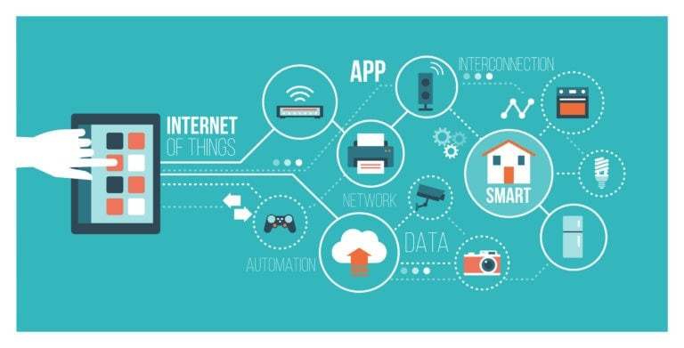
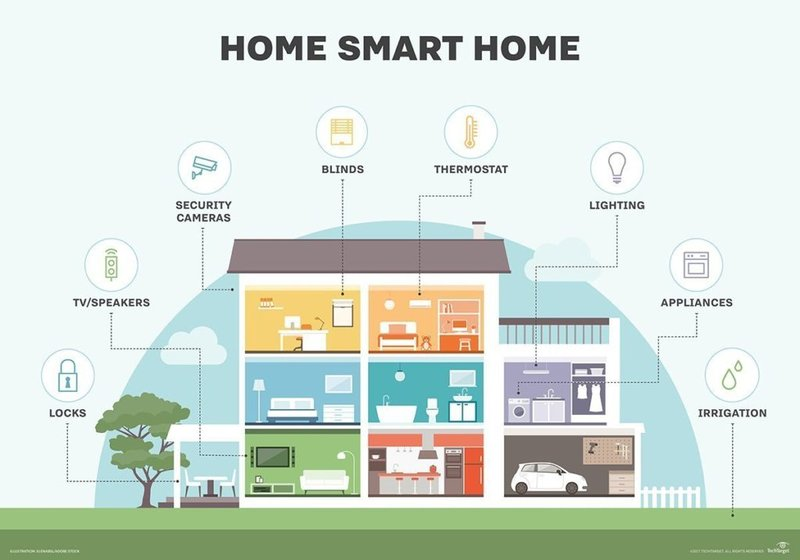
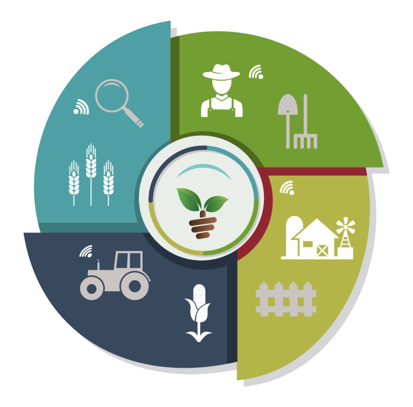

IoT
 (1).jpg)
Internet of Things (IoT) membuka pintu menuju transformasi digital yang revolusioner di berbagai sektor kehidupan kita. Dalam konsep ini, tidak hanya benda atau objek yang kita kenal sehari-hari yang terhubung ke internet, tetapi juga mereka ditanami dengan beragam teknologi canggih seperti sensor dan perangkat lunak pintar.
Konsep
Internet of things (IoT) mengintegrasikan “segala hal” setiap hari dengan internet, konsep dimana suatu objek yang memiliki kemampuan untuk mentransfer data melalui jaringan tanpa memerlukan interaksi manusia ke manusia atau manusia ke komputer. Rekayasawan Komputer telah menambahkan sensor dan prosesor ke benda sehari-hari sejak 90-an. Namun, kemajuan awalnya lambat karena cipnya besar dan memakan banyak tempat. Cip komputer berdaya rendah yang disebut tanda RFID pertama kali digunakan untuk melacak perlengkapan mahal. Karena menyusutnya ukuran perangkat komputer, cip ini juga semakin kecil, cepat, dan pintar dari waktu ke waktu.
Contoh Penerapan
Smart Home
Sistem keamanan pintar yang menggunakan kamera CCTV, sensor gerak, dan pengunci pintu otomatis. Penghuni dapat memantau rumah mereka secara real-time melalui aplikasi seluler.
Smart Agriculture
Sensor tanah untuk memonitor kelembaban, nutrisi tanah, dan kondisi cuaca. Informasi ini dapat digunakan untuk mengoptimalkan irigasi, pemupukan, dan penjadwalan panen.
Smart Cities

Lampu jalan pintar yang menggunakan sensor untuk mendeteksi kehadiran orang atau kendaraan, secara otomatis mengatur tingkat kecerahan untuk menghemat energi.